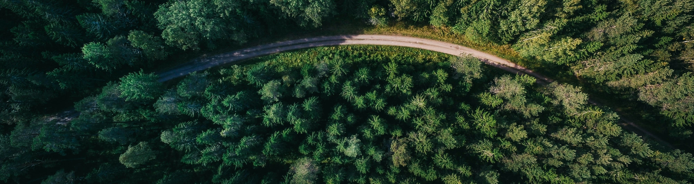
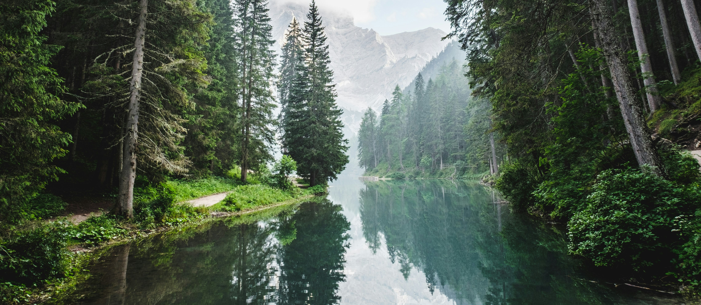

Welcome to Freecycling!, a thriving community-driven platform dedicated to promoting environmental sustainability through freecycling. Founded on the principles of waste reduction and community empowerment, our mission is to connect individuals who are eager to find new homes for items they no longer need. At Freecycling!, we believe in the power of reusing and recycling goods to not only conserve resources but also foster a sense of community and mutual support. Our core values include sustainability, integrity, and inclusivity, guiding us to build a network that supports free exchange and environmental stewardship across neighborhoods globally.
Since our inception, Freecycling! has facilitated the exchange of over half a million items, diverting substantial waste from landfills and promoting a greener planet. Our community's enthusiasm and active participation have been pivotal in spreading awareness about sustainable living. Looking forward, we aim to expand our reach by introducing more innovative features that make freecycling even more accessible and engaging. By enhancing our platform with user-friendly technology, we hope to inspire larger numbers of people to join our cause, further amplifying our impact on waste reduction and resource conservation. Together, we are not just exchanging goods; we are building a movement towards a sustainable future.
At Freecycling!, we are proud to have a diverse and vibrant community of members who share a common passion for sustainability and community building. Our members come from all walks of life, united by a commitment to reducing waste and promoting the reuse of resources. From families looking to declutter their homes to students seeking affordable essentials, our community is a melting pot of generosity and goodwill. By fostering connections and encouraging open communication, we strive to create a welcoming space where everyone can contribute to a greener, more sustainable future. Join us today and be part of a global movement that is changing the way we think about consumption and waste.